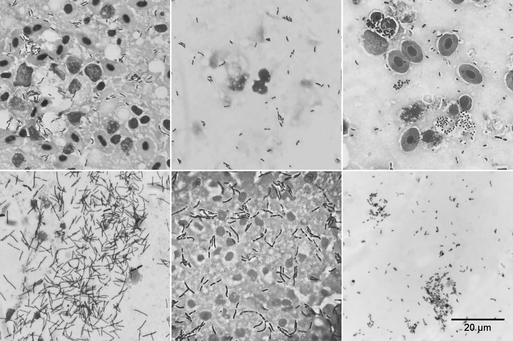

Knowing the limitations of a method does more than protect us from incorrect conclusions — it tells us where and how to look for what we cannot yet see.
Ziehl–Neelsen without the full set of reagents: what can we still learn?
If you have a fully equipped laboratory, all the necessary reagents and suitable working conditions, the answer is straightforward: to test bacterial acid-fastness, perform a standard Ziehl–Neelsen stain.
This article is not about replacing the standard method when it is available.
It deals with another situation, one much more familiar in small fish farms, public aquariums, among fish pathologists without a dedicated bacteriology laboratory, and even among aquarists who own a microscope. There is a diagnostic question and a specimen ready to examine, but not the complete set of reagents.
Phenol is toxic, unpleasant to handle and requires appropriate storage and working conditions.
Strong mineral acids are not exactly substances you would want to keep next to your microscope “just in case.” They must be purchased, stored and handled with appropriate safety measures.
If part of the classical procedure is unavailable, does that mean the specimen can no longer provide useful information?
You can treat what follows as a little methodological experiment: remove one step, substitute another and see what changes. Or you can treat it as a practical necessity.
Either way, the principle is the same:
Understand what each step actually does, what we learn from it, and what we can no longer conclude when that step is removed or modified.
What does the classical method actually do, and where did it come from?


Ziehl–Neelsen staining is used to detect acid-fast bacteria, including mycobacteria (World Health Organization, 1982). However, a positive stain does not identify a bacterial genus.
Interestingly, the procedure we know today did not emerge all at once. What we call “Ziehl–Neelsen staining” took shape over a remarkably short period through successive changes to existing staining methods (Vilchèze & Kremer, 2017).
In March 1882, Robert Koch, presenting his work on the causative agent of tuberculosis, described staining specimens with a hot alkaline solution of methylene blue, followed by counterstaining with vesuvin (Bismarck brown). Mycobacteria appeared blue against a brown background (Vilchèze & Kremer, 2017).
In May of the same year, Paul Ehrlich modified the method. Instead of methylene blue, he used fuchsin or methyl violet in saturated aniline water, then decolorized the specimen with 30% nitric acid and applied a counterstain (Vilchèze & Kremer, 2017).
Franz Ziehl took the next step. In August 1882, he replaced aniline oil with carbolic acid (phenol). The resulting carbol fuchsin solution proved more stable than Ehrlich’s aniline-based preparation (Vilchèze & Kremer, 2017).
In October 1882, Eduard Rindfleisch proposed heating the specimen directly during staining.
Then, in July 1883, Friedrich Neelsen published his modification of Ziehl’s method: 0.75% fuchsin in 5% carbolic acid, followed by decolorization with 25% sulfuric acid (Vilchèze & Kremer, 2017).
So phenol did not enter the method as an immutable part of some original recipe.
Ziehl introduced it in place of aniline, Rindfleisch added heat, and Neelsen modified the dye composition and decolorization conditions.
Within roughly sixteen months, Koch’s original technique had undergone several substantial changes. Only later did the procedure become established under the familiar name Ziehl–Neelsen staining (Vilchèze & Kremer, 2017).
And its development did not stop there.
In 1887, Gabbett attempted to shorten the procedure by combining acid decolorization with counterstaining. In 1915, Joseph Kinyoun proposed a “cold” method without heating: the fuchsin concentration was increased to approximately 3.1%, phenol to 6.25%, and 3% hydrochloric acid was used as the decolorizer (Vilchèze & Kremer, 2017).
Even historically, the method developed in precisely this way:
The objective remained the same, while the means of achieving it changed: reagents were replaced, concentrations adjusted and treatment conditions modified.
What is considered the classical procedure today?
Modern versions use heated carbol fuchsin, followed by acid or acid-alcohol decolorization and a contrasting counterstain (World Health Organization, 1982) (World Health Organization, 1999).
One decolorizing formulation is 3% acid-alcohol:
3 mL of concentrated hydrochloric acid + 97 mL of 95% ethanol.
In this formula, “3%” denotes the conventional volume ratio of the starting concentrated acid to alcohol, not the precise mass fraction of pure HCl (World Health Organization, 1998).
This is not Neelsen’s original formulation. His 1883 version used 25% sulfuric acid.
The same applies to the primary dye. Neelsen used 0.75% fuchsin in 5% phenol. The composition was subsequently modified many times: Vilchèze and Kremer describe 0.3% fuchsin and 5% phenol for one modern ZN formulation, and considerably higher concentrations for Kinyoun’s cold method (Vilchèze & Kremer, 2017).
This matters for understanding the method:
There is no single concentration forever fixed by the name “Ziehl–Neelsen.” There is a purpose behind each operation, and a set of conditions under which it produces a reproducible result.
Knowing a method’s limitations means being able to work with them
If you see the method as a recipe, it is simple:
fuchsin → heat → acid → counterstain.
But when we ask why each step is performed, the picture becomes more interesting:
- carbol fuchsin provides intense primary staining;
- phenol and heating help the dye penetrate structures that are difficult to stain;
- acid decolorization tests whether stained structures can retain fuchsin;
- counterstaining makes the background easier to examine under a microscope.
Removing one step therefore does not necessarily make the entire result useless.
Some observations remain valid, but certain conclusions can no longer be drawn.
Know the limits of a method, and you can work with them.
Ignore those limits, and all you can do is follow a recipe.
If we cannot see bacteria, we do not know whether they are absent from the tissue or simply not detected by the staining method used.
If staining makes them visible, that is already an observation. We can examine their shape, number, distribution and association with pathological lesions.
But what the observation actually proves depends on how we obtained the image. We can see red rods; whether those rods would retain fuchsin after acid treatment is a separate question.
Acid-fast does not necessarily mean Mycobacterium

Nocardia may appear as long rods, filamentous structures or branching clusters. They exhibit partial, or variable, acid-fastness: under milder decolorization conditions, some cells retain fuchsin, while stronger treatment may remove the stain. Intensely and weakly stained segments can coexist in a single specimen. This property is assessed by the outcome of the staining procedure, not by how long, curved or branched a rod happens to look
(Brown-Elliott et al., 2006).
In the study by Del Rio-Rodriguez and colleagues, branching acid-fast bacteria found in red drum were identified as Nocardia seriolae. The authors demonstrated the organisms using several staining techniques and confirmed their identity by molecular methods (Del Rio-Rodriguez et al., 2021). Importantly, Nocardia may retain stain even with the Ziehl–Neelsen procedure; such a result cannot automatically be attributed to mycobacteria. Yet without identification, the reverse assumption is equally unjustified: we cannot claim that most large rods must be nocardia.
Ziehl–Neelsen staining reveals a property of stained structures, not their genus. Branching is a reason to investigate Nocardia, not proof of nocardiosis. Granulomas, bacterial size and a “broken” or beaded staining pattern are not enough, by themselves, to distinguish between these diagnoses.
What if phenol is unavailable?
Phenol is included in classical carbol fuchsin for a reason. Traditionally, it is thought to facilitate dye penetration through the lipid-rich cell envelope of mycobacteria. Heating also promotes staining.
But is fuchsin really unable to penetrate bacteria without phenol?
Researchers tested this experimentally long before my own attempts — and, interestingly, some of those experiments involved pathogens of fish.
In 2000, Vinnie Della Speranza and Rena Fail published a paper with a particularly expressive title: “Phenol Myth Unveiled! Were Ziehl-Neelsen and Kinyoun Mistaken?”
The authors first tried replacing phenol with surfactants. They then investigated what would happen if those were removed as well, leaving only an aqueous solution of basic fuchsin.
The result was unexpected: a 0.5% aqueous fuchsin solution heated to 60 °C for 15 minutes stained mycobacteria well. At room temperature, the same solution remained ineffective even after an hour. The paper includes micrographs of Mycobacterium avium and M. tuberculosis stained without phenol (Della Speranza & Fail, 2000).
Thus, omitting phenol does not necessarily prevent staining. But the conditions under which the dye is applied do matter.
In 2008, Carol McCollough tested this approach directly on pathogens of fish and aquatic invertebrates.
She used 0.5% aqueous fuchsin at 60 °C for 15 minutes, followed by acid-alcohol decolorization. The procedure revealed M. marinum in a goldfish kidney and M. chesapeaki in the spleen of a striped bass.
The study was not limited to mycobacteria. Positive staining was also obtained with several microsporidian, haplosporidian and myxosporean organisms. Not all targets stained equally well: for instance, fixed spores of Kudoa clupeidae failed to retain fuchsin after decolorization (McCollough, 2008).
In other words, a phenol-free method has already been used in fish pathology to detect mycobacteria in fish tissues, including spleen specimens.
In 2020, Gomes and colleagues conducted another comparative study and proposed a modification called GASMoC.
Unlike the earlier experiments, this method used 1% aqueous fuchsin at only 37 °C for 15 minutes. Specimens were stained in parallel: some with conventional carbol fuchsin and others without phenol. Both groups then underwent the same acid-alcohol decolorization.
Of twelve samples with previously established tuberculosis, GASMoC detected acid-fast bacteria in all twelve, compared with eleven using the conventional Ziehl–Neelsen technique. All seven negative controls remained negative with both methods.
The researchers found no statistically significant difference between the methods. In fact, rods stained by GASMoC were often more intensely colored and easier to distinguish from surrounding tissue.
The paper presents directly comparable micrographs, with phenol in one procedure and without it in the other. The authors also successfully tested the method on zebrafish tissue containing Mycobacterium marinum (Gomes et al., 2020).
Thus, phenol was not essential for detecting acid-fast bacteria in the specimens examined. Changing the composition of the primary dye did not eliminate a diagnostically useful result.
One detail is especially important here: all three studies retained the acid-decolorization step. The authors omitted phenol, but continued to test fuchsin retention after acid treatment.
So this is not merely about seeing red rods without phenol. It is about detecting acid-fast structures using a modified primary stain.
Of course, that does not mean any staining procedure can be modified arbitrarily and expected to produce identical results. It does show that the same diagnostic property can be demonstrated under different staining conditions.
If phenol helps a dye enter a bacterium, that does not mean entry is impossible without it. The question is not whether a particular reagent is indispensable, but whether the required result can be achieved without it.
If phenol is unavailable, we need not ask:
“How can we pretend that we are still performing Ziehl–Neelsen?”
Instead, we can ask:
Can we stain the structures of interest sufficiently well by another means?
In my own specimens, intense heating with fuchsin but without phenol made red rod-shaped bacteria clearly visible. This does not prove that phenol and heat are completely interchangeable. Nor does it turn such a procedure into classical Ziehl–Neelsen staining. But something important did happen for the practical task at hand:
Bacteria that had previously been difficult to distinguish became visible.
We can assess their morphology, abundance and distribution within the tissue. That is already useful information.
What if acid is unavailable?
Here the boundary is even clearer. It is acid decolorization that establishes the property behind the term “acid-fast”: following differentiation, some structures lose fuchsin while others retain it. Therefore, if the specimen has not undergone acid decolorization, we cannot claim:
“Acid-fast bacteria were detected.”
Acid-fastness was simply not tested. But that does not make everything done beforehand meaningless. If intensive staining reveals numerous clearly distinguishable rod-shaped bacteria in tissue material, we already know they are present. We can see their shape, the density of their clusters, their distribution and their relationship to pathological changes.
We simply do not yet know one more property — whether they would retain fuchsin after acid differentiation. And those are fundamentally different things.
After intensive fuchsin staining, the specimen can be counterstained. In my case, I used Loeffler’s counterstain. The rods that had stained intensely before remained bright red.
This contrast makes rod-shaped bacteria easy to see. But by itself, it is not a test for acid-fastness.
Nor does it justify calling every visible rod a mycobacterium: without genus-level identification, Nocardia and other bacteria with similar morphology cannot be excluded.
And this opens up another possibility that is easily overlooked if acid is treated as a mandatory part of every fuchsin stain. Without acid decolorization, we see more than just structures capable of surviving acid treatment. Other bacteria, spores, parasite oocysts and various tissue structures may also remain stained. Sometimes that is a disadvantage: the background becomes denser and the specimen harder to interpret. At other times, this broader picture is exactly what we need.
By omitting acid decolorization, we lose selectivity for acid-fastness, but we may reveal structures that the omitted step would have made invisible.
This is not an invented approach. For example, modified acid-fast stains using fuchsin are employed to detect oocysts of Cryptosporidium, Cyclospora and Cystoisospora. These are parasites, not fungi. In standard versions, acid decolorization is generally modified rather than omitted; staining can be variable, and some oocysts remain entirely unstained (CDC, n.d.) (CDC, n.d.).
Bacterial endospores are another example. Dorner’s staining method uses heated carbol fuchsin; one modification dispenses with a separate acid-decolorization step. It is not a stain for mycobacteria, but a way to demonstrate a different structure with a familiar dye (American Society for Microbiology, 2016).
So the question is not always how to make a stain “correct” for one particular pathogen. Sometimes it is more useful to reveal a wider range of structures, assess their morphology and distribution, and then decide which findings need specific confirmation.
One organ — three staining methods
For this comparison I used material from the spleen of a freshwater angelfish, which contained numerous pale lesions.
Here is a gross photograph of the spleen.
Three sets of specimens were prepared from this material using different procedures:
Without phenol or acid decolorization.
Without phenol, but with decolorization using 5% sulfuric acid.
With phenol, followed by acid decolorization.
The same microscope and camera were used throughout.


The result was interesting: rod-shaped bacteria of similar morphology were clearly visible in all three preparations. Staining was retained even after treatment with 5% sulfuric acid in the absence of phenol.
In separate earlier experiments, I had observed rods retaining the stain even after thirty minutes of treatment with 10% sulfuric acid.
Naturally, three specimens from one organ do not constitute a full comparative study of staining sensitivity. They do, however, provide direct evidence that removing phenol does not necessarily prevent staining of the bacteria we are trying to examine.
This raises the central question: if the required result can be obtained after changing the reagent composition, which parts of the procedure are essential and which are merely one way of achieving the objective?
That does not make phenol useless or the three procedures equivalent. It means the results can be investigated, compared and evaluated rather than merely checked against a recipe.
Here is another example. In a different specimen, we replace fuchsin with an aqueous solution of malachite green, perform acid decolorization, and counterstain with phloxine.

Do you see any similarity in morphology?

Both preparations show elongated rod-shaped structures, sometimes forming characteristic clusters. The colors, contrast and staining patterns differ, but similarities in shape and arrangement are readily apparent.
We have replaced not only phenol, but the primary dye itself. Yet the morphological features of interest remain available for observation.
Of course, similarity between images does not prove that different specimens contain the same microorganisms. It shows that useful morphological information can be obtained by different means.
Now another question: does every diagnostic task really require Ziehl–Neelsen staining?
Sometimes the immediate task is not to confirm a particular bacterial property but to detect suspicious structures, examine their morphology and decide what to investigate next.
Can you find rod-shaped structures without color?
Select the squares where you think rod-shaped structures are present. Then reveal the color image.

Does it have to be that particular acid?
Even the history of the classical method shows that the important thing is not the “magic” of one particular acid, but how it decolorizes the specimen and whether the structures of interest retain their stain.
Different acid-fast staining procedures use different reagents and concentrations for differentiation: for example, sulfuric acid at various concentrations or acid-alcohol containing HCl ( World Health Organization, 1982; World Health Organization, 1999). WHO materials have also mentioned hydrochloric, sulfuric and nitric acids (World Health Organization, n.d.).
The purpose of acid treatment is to distinguish structures that readily lose their stain from those that retain fuchsin under the chosen conditions. But changing the acid, its concentration or the exposure time does not automatically produce an equivalent diagnostic test.
That leads to a perfectly reasonable experimental question:
What would happen if we replaced the usual decolorizer with a concentrated citric acid solution? Which structures would lose their stain, and which would retain it?
If the background becomes decolorized while some rods remain red, that is an interesting experimental result. But this observation alone does not establish acid-fastness by a standard criterion.
Important: this is an experimental substitution of a reagent, not a validated variant of Ziehl–Neelsen staining. Citric acid is not listed as a standard decolorizer in the reference procedures reviewed here; equivalence would need to be evaluated using control specimens.
The concentration is therefore not a sacred number in a recipe. The type of acid and duration of treatment matter as well. With mild treatment, the surrounding tissue may retain fuchsin; if your objective is simply to see the rods, that is not always a problem. With harsher treatment, even the bacteria of interest may lose their stain. We need to understand exactly what the rods withstand rather than treating any residual red staining as proof of the same property.
The task is not to find a universally “correct” acid concentration. It is to understand what happens as the decolorization conditions become more or less stringent.
Even acid-fastness is not an unchanging property
Mycobacteria are often described as acid-fast bacteria, as though every cell always retained the dye equally well. But even within one genus, the expression of this property can vary.
The situation is not quite that simple.
Vilchèze and Kremer discuss the so-called “Koch paradox”: when Mycobacterium tuberculosis enters a persistent, nonreplicating state, some bacilli may become ZN-negative — no longer detectable by standard acid-fast staining (Vilchèze & Kremer, 2017). Such a state is often called dormant, or “sleeping,” although the bacteria are not literally asleep.
This has been associated with changes in lipid metabolism and cell-envelope structure. The exact mechanism behind the loss of acid-fast staining is not yet fully established: envelope changes may hinder dye penetration or reduce dye retention after decolorization.
Here, knowledge of Koch’s paradox suggests a simple practical approach. Imagine a familiar situation: the spleen or kidneys contain numerous granulomas, the findings resemble mycobacteriosis, but no rods are detected by Ziehl–Neelsen staining. What next? We could stain the material again with fuchsin, this time without acid decolorization.
Perhaps we would see the same irregular, unevenly stained rods of familiar morphology that were not visible after acid treatment. We would not have proved that they are mycobacteria, but we would have obtained another observation and a new direction for investigation.
This is not an attempt to “fix” a negative Ziehl–Neelsen result at any cost. We are simply using another staining approach: first examining morphology without selection by acid retention, then comparing what we find with changes in the tissue. Omitting acid broadens the range of visible structures, so a familiar bacterial shape alone does not become a diagnosis.
Vilchèze and Kremer’s work primarily concerns M. tuberculosis. It is good reason not to treat a negative ZN stain as proof that mycobacteria are absent, but it does not justify explaining every ZN-negative granuloma in a fish as dormant mycobacteria.
Properly performed Ziehl–Neelsen staining does not answer “Are there any mycobacteria here at all?” It answers a narrower question: “Are there structures here that demonstrate acid-fast staining under these conditions?”
The practical implication is significant.
If rod-shaped bacteria retain their stain after acid differentiation performed according to an established procedure, we observe acid-fastness under those conditions — but we have not yet identified their genus or species.
If no bacteria are detected by ZN staining, that does not yet prove that mycobacteria are absent from the specimen.
During persistent infection, part of the bacterial population may remain undetectable by conventional acid-fast staining,
potentially leading to an underestimate of bacterial burden
(Vilchèze & Kremer, 2017).
A stain does not reveal a bacterium’s name. It reveals how that bacterium responds to a particular procedure.
This is where understanding the limitations of a method becomes especially important.
We see rods — we know that rod-shaped bacteria are present in the tissue.
We perform acid decolorization according to an established method, and the rods retain their stain — we observe acid-fastness under those conditions, but still do not know their genus or species.
Ziehl–Neelsen gives a negative result — we still do not know whether mycobacteria are absent from the tissue.
What do we actually know in the end?
Imagine a specimen in which heating with fuchsin makes numerous thin red rods clearly visible.
If their morphology allows us to distinguish them confidently as rod-shaped bacteria, we can describe their presence in the material examined. But not everything that takes up fuchsin is necessarily a bacterium: other structures may also be present in the specimen.
We can assess:
- their shape and size;
- how they are arranged;
- their number and the density of clusters;
- the tissue context;
- their association with granulomatous or other pathological changes;
- whether the finding is repeated in different areas of the material.
Morphology alone does not identify a bacterial genus, let alone a species.
But the absence of complete identification does not make an observation useless.
Seeing bacteria and identifying their species are two different diagnostic tasks.
Likewise:
Seeing stained bacteria and demonstrating acid-fastness are also two different tasks.
If greater certainty is needed, the next step may be a complete acid-fast staining procedure, culture, PCR or another confirmatory method.
But if none of those options is currently available, that is no reason to pretend the microscope showed nothing at all.
Where is the “tradition instead of science” in all this?
The standard method itself is not the problem.
A standard method is valuable precisely because its conditions are defined, tested and reproducible.
The problem begins when we stop asking why each step is performed and simply repeat the familiar sequence like a ritual:
“Without phenol, you cannot see anything.”
“You must use this particular acid because the protocol says so.”
“If one step is missing, the entire result automatically becomes worthless.”
A scientific approach asks a different question:
What exactly changed in the result when we changed the method?
If you do not understand what a stain actually demonstrates, you may never even think to examine the material differently. When you do not recognize the limits of your knowledge, you also fail to see the questions that remain to be asked.
If we omit acid decolorization, we lose the grounds for claiming acid-fastness, but we do not necessarily lose diagnostic information.
In fact, we may see structures that acid treatment would otherwise have made invisible.
If we change the staining conditions, we examine whether the desired image can still be obtained.
If we substitute the acid, we test which structures become decolorized and what conclusions the result supports.
Sometimes modifying a method narrows the range of defensible conclusions while expanding the range of things we can observe. The boundary is not between a “correct” and an “incorrect” ritual, but between what was actually tested and what we merely assume.
You can modify a method. But when you do, the limits of what you can legitimately conclude change as well.
How should the result be described?
If the classical procedure was not performed in full, we cannot simply call it by the classical name.
You can say:
“A modified heated fuchsin stain without acid decolorization was used. Intensely stained rod-shaped bacteria were observed in the tissue material. Their acid-fastness was not assessed.”
You cannot say:
“Ziehl–Neelsen staining was performed; acid-fast bacteria were detected.”These are different claims.
If acid-fastness has actually been tested, a suitable description is “acid-fast rod-shaped bacteria (branching where observed) were detected.” Identifying them as “mycobacteria” or “nocardia” requires further evidence.
Conclusion
Knowing a method’s limitations means being able to work with them.
If a method has been modified, we should neither present it as the standard procedure nor automatically dismiss the resulting information as useless. Sometimes omitting one step costs us diagnostic selectivity, but allows us to notice something we could not previously see.
The task is much simpler:
State precisely what we did, what we saw and what actually follows from it.
References
Maekawa, S., Yoshida, T., Wang, P.-C., Chen, S.-C., 2018. Current knowledge of nocardiosis in teleost fish. Journal of Fish Diseases, 41(3), 413–419. A review of fish nocardiosis and the granulomatous lesions associated with Nocardia infection.
https://doi.org/10.1111/jfd.12782
Brown-Elliott, B.A., Brown, J.M., Conville, P.S., Wallace, R.J., 2006. Clinical and Laboratory Features of the Nocardia spp. Based on Current Molecular Taxonomy. Clinical Microbiology Reviews, 19(2), 259–282. Describes branching forms, variable acid-fastness and modified staining with milder decolorization.
https://doi.org/10.1128/CMR.19.2.259-282.2006
Del Rio-Rodriguez, R.E. et al., 2021. First evidence of fish nocardiosis in Mexico caused by Nocardia seriolae in farmed red drum (Sciaenops ocellatus, Linnaeus). Journal of Fish Diseases, 44(8), 1117–1130. Figure 4 shows branching and unevenly stained structures; N. seriolae was confirmed by PCR and sequencing.
https://doi.org/10.1111/jfd.13373
Centers for Disease Control and Prevention (CDC), n.d. DPDx — Stool Specimens: Staining Procedures.
Describes modified acid-fast stains for oocysts of Cryptosporidium, Cyclospora and Cystoisospora. They use fuchsin and differentiation but differ from classical Ziehl–Neelsen staining.
https://www.cdc.gov/dpdx/diagnosticprocedures/stool/staining.html
Centers for Disease Control and Prevention (CDC), n.d. DPDx — Cryptosporidiosis.
Illustrates oocysts after modified acid-fast staining and notes variable staining, including almost completely unstained oocysts.
https://www.cdc.gov/dpdx/cryptosporidiosis/
American Society for Microbiology (ASM), 2016. Endospore Stain Protocol.
Describes bacterial endospore staining with carbol fuchsin, including a modification of Dorner’s method without a separate acid-decolorization step.
https://asm.org/ASM/media/Protocol-Images/Endospore-Stain-Protocol.pdf?ext=.pdf
World Health Organization, 1998. Laboratory services in tuberculosis control. Part II: Microscopy. WHO/TB/98.258.
Includes the recipe for 3% acid-alcohol: 3 mL of concentrated HCl added to 97 mL of 95% ethanol.
https://iris.who.int/bitstream/10665/65942/2/WHO_TB_98.258_%28part2%29.pdf
World Health Organization, 1982. Staining methods for acid-fast bacteria.
Describes classical heated Ziehl–Neelsen staining with carbol fuchsin and decolorization using 15% sulfuric acid.
https://iris.who.int/bitstream/handle/10665/260733/PMC2366253.pdf?isAllowed=y&sequence=1
World Health Organization, 1999. Tuberculosis: a manual for medical students. WHO/CDS/TB/99.272.
Describes the heated Ziehl–Neelsen method, acid-alcohol decolorization and a formulation using 25% sulfuric acid.
https://iris.who.int/bitstream/handle/10665/68559/WHO_CDS_TB_99.272.pdf
Vilchèze, C., Kremer, L., 2017. Acid-Fast Positive and Acid-Fast Negative Mycobacterium tuberculosis: The Koch Paradox. Microbiology Spectrum, 5(2).
Reviews the history of acid-fast staining from Koch through Neelsen and later modifications, along with ZN-negative forms of M. tuberculosis, changes in the bacterial envelope and the limitations of negative staining results.
https://doi.org/10.1128/microbiolspec.TBTB2-0003-2015
Della Speranza, V., Fail, R., 2000.
Phenol Myth Unveiled! Were Ziehl-Neelsen and Kinyoun Mistaken?
HistoLogic, 33(2), 21–23. Study of mycobacteria stained with an aqueous basic fuchsin solution without phenol.
https://sakura-merged.planeteria-development.com/getattachment/f46887f6-b611-4878-8ed0-1de6e1eb0987/434
McCollough, C.B., 2008.
Application of an aqueous acid-fast staining technique
to detect pathogens of aquatic species.
Biotechnic & Histochemistry, 83(3–4), 191–197. Application of phenol-free aqueous fuchsin to detect mycobacteria and other pathogens of fish and aquatic invertebrates.
https://doi.org/10.1080/10520290802450780
Gomes, A., Amaral, P., Santos, R., Santos, S.,
Tortosa, F., Mendonça, P., Marques-Ramos, A., 2020.
GASMoC method: a phenol-free technique
to detect acid-fast bacilli.
Histochemistry and Cell Biology, 153, 63–69. Comparison of classical Ziehl–Neelsen staining with a phenol-free modification, including a control using zebrafish tissue containing Mycobacterium marinum.
https://doi.org/10.1007/s00418-019-01825-0
Caulfield, A.J., Wengenack, N.L., 2016. Diagnosis of active tuberculosis disease: From microscopy to molecular techniques. Journal of Clinical Tuberculosis and Other Mycobacterial Diseases, 4, 33–43. Reviews acid-fast staining, the hydrophobic mycobacterial cell wall, mycolic acids and dye-complex resistance to decolorization.
https://pmc.ncbi.nlm.nih.gov/articles/PMC6850262/
World Health Organization, 1982. General tests / staining procedure for acid-fast bacilli.
Notes that high lipid content makes dye penetration difficult; staining may involve prolonged exposure to carbol fuchsin or heating.
https://iris.who.int/bitstream/10665/62463/1/BLG_UNDP_82.1_eng.pdf
Ramos, A. et al., 2019. GASMoC method: a phenol-free technique to detect acid-fast bacilli.
Example of a study of a modified phenol-free technique for detecting acid-fast bacteria.
https://pubmed.ncbi.nlm.nih.gov/31654127/
World Health Organization, n.d. Ziehl–Neelsen procedure: fundamentals.
States that several acids can be used for decolorization, including hydrochloric, sulfuric and nitric acid, and describes the role of acid treatment in regressive differentiation.
https://applications.emro.who.int/docs/EM_SND_MTG_STR_LEP_CNT_9_3_EN.pdf
See also
 The Smear Comes First.A reflection on why smear microscopy often matters more than bacterial culture in fish pathology. Real cases, logic, and the danger of …
Scientific Method. A Practical
The Smear Comes First.A reflection on why smear microscopy often matters more than bacterial culture in fish pathology. Real cases, logic, and the danger of …
Scientific Method. A PracticalGuide.
 Scientific Method. A Practical Guide.How knowledge is formed, why confidence often outpaces understanding, and how the scientific method helps distinguish observation from …
Simple Rules for Working
Scientific Method. A Practical Guide.How knowledge is formed, why confidence often outpaces understanding, and how the scientific method helps distinguish observation from …
Simple Rules for Workingwith Aquarium Fish
 Simple Rules for Working with Aquarium FishBasic guidelines for diagnosing and caring for aquarium fish: what to do in case of mortality, how to interpret appetite, and when to treat …
Cryptocaryonosis: killing the parasite
Simple Rules for Working with Aquarium FishBasic guidelines for diagnosing and caring for aquarium fish: what to do in case of mortality, how to interpret appetite, and when to treat …
Cryptocaryonosis: killing the parasiteor treating the water?
 Cryptocaryonosis: killing the parasite or treating the water?A practical analysis of cryptocaryonosis treatment in marine fish: why killing the parasite should not become more important than the …
Fish coccidia: Goussia
Cryptocaryonosis: killing the parasite or treating the water?A practical analysis of cryptocaryonosis treatment in marine fish: why killing the parasite should not become more important than the …
Fish coccidia: Goussia
 Fish coccidia: GoussiaCoccidia of the genus Goussia in fish. Morphology of oocysts, sporocysts, and sporozoites, with diagnostic interpretation of microscopic …
Granulomas and intracellular agents
Fish coccidia: GoussiaCoccidia of the genus Goussia in fish. Morphology of oocysts, sporocysts, and sporozoites, with diagnostic interpretation of microscopic …
Granulomas and intracellular agentsin fish
 Granulomas and intracellular agents in fishA collection of real observations: intracellular yeast-like organisms, coccidia, cryptosporidia, and fungal structures in fish.
Granulomas and intracellular agents in fishA collection of real observations: intracellular yeast-like organisms, coccidia, cryptosporidia, and fungal structures in fish.